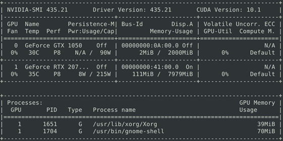
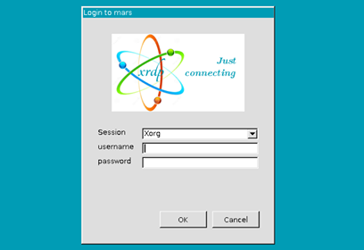

DL Machine系列-00 環境建置
前言
有鑒於每次實驗架設環境都花很多時間，也常常遇到版本更新後某些套件不相容的問題，所以才打算使用Docker來架設深度學習的虛擬環境(絕對不是因為覺得用Docker很帥才用的)，說到深度學習就不得不使用GPU，使用GPU就不得不用nvidia-docker來架設環境，剛剛好本人的實驗室目前有一台電腦正空閒下來，也剛剛好多出一張RTX 2070S，想說利用Docker來一勞永逸這個問題，也順便試試看多GPU的環境是什麼樣的感覺。
電腦配置
CPU： AMD Ryen Threadripper 1900X 8-core
MotherBoard：ROG Strix X399-E Gamming
GPU：RTX 2070 super, GTX 1050
RAM：Kingston 16Gx8 2933MHz
Storage：2TB SSD*2, 1*1TB m.2 SSD
Power：750w金牌電源
Ubuntu 18.04安裝
在安裝Ubuntu的時候，會顯示出
install ubuntu/ try ubuntu without installationinstall ubuntu
等等的選項，但是選擇後螢幕變黑屏沒反應。
經過查找，應該是因為Ubuntu對於RTX顯示卡沒有對應的Driver，所以導致這個問題。
我這邊使用另一張顯卡安裝，再去更新Nvidia-driver來避免這個問題。
安裝的時候選擇：
在新安裝的Ubuntu上使用LVM
這是因為之後新增硬碟用LVM來管理。
確認GPU狀態
執行ubuntu-drivers devices去確認
如果你只有看到這一項：nvidia-driver-390 - distro non-free，那你必須去將NVIDIA repository加入到你的apt庫。
可以用dpkg -l 'nvidia*'去看電腦上安裝的Nvidia Driver
執行sudo ubuntu-drivers autoinstall安裝driver，完成之後執行nvidia-smi就可以看到：

安裝基本工具
1 | sudo apt-get update |
設定ip(區域網路)
打開/etc/netplan/01-network-manager-all.yaml
更改成這樣：
1 | # Let NetworkManager manage all devices on this system |
參數說明：
eno1： 網卡名稱(可以透過ifconfig查看)
addresses： 要指定的ip
gateway4： 閘道 ip4(gateway6 閘道 ip6)
nameservers： dns 以逗號階隔
註：
/32 指的是 network mask of 255.255.255.255
/24 指的是 network mask of 255.255.255.0
依照個人網路調整即可，用sudo netplan apply就可以套用剛剛的設定了。
安裝vnc遠端操控
安裝 xfce4 與 xrdp
1 | sudo apt-get install xfce4 |
配置登入環境
1 | echo xfce4-session > ~/.xsession |
將stratum.sh更改：
1 | if test -r /etc/profile; then |
啟動 xrdp 服務：
1 | sudo service xrdp restart |
確認服務正常運行：
1 | netstat -na | grep 3389 |
這時就可以透過Windows的遠端桌面連線到你的Linux主機了：

補充
可以透過：
1 | sudo lshw -html > ~/hardware.html |
來看這台電腦的硬體配備，用瀏覽器打開即可。
DL Machine系列-00 環境建置